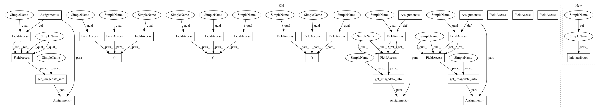

3cbeab42c246425425c584cd53f1cc25d8c738a7,torchreid/datasets/cuhk03.py,CUHK03,__init__,#CUHK03#Any#Any#Any#Any#Any#,42
Before Change
if verbose:
self.print_dataset_statistics(train, query, gallery)
self.train = train
self.query = query
self.gallery = gallery
self.num_train_pids, self.num_train_imgs, self.num_train_cams = self.get_imagedata_info(self.train)
self.num_query_pids, self.num_query_imgs, self.num_query_cams = self.get_imagedata_info(self.query)
self.num_gallery_pids, self.num_gallery_imgs, self.num_gallery_cams = self.get_imagedata_info(self.gallery)
def preprocess_split(self):
This function is a bit complex and ugly, what it does is
After Change
dataset_dir = "cuhk03"
def __init__(self, root="data", split_id=0, cuhk03_labeled=False, cuhk03_classic_split=False, verbose=True, **kwargs):
super(CUHK03, self).__init__(root)
self.dataset_dir = osp.join(self.root, self.dataset_dir)
self.data_dir = osp.join(self.dataset_dir, "cuhk03_release")
self.raw_mat_path = osp.join(self.data_dir, "cuhk-03.mat")
self.imgs_detected_dir = osp.join(self.dataset_dir, "images_detected")
self.imgs_labeled_dir = osp.join(self.dataset_dir, "images_labeled")
self.split_classic_det_json_path = osp.join(self.dataset_dir, "splits_classic_detected.json")
self.split_classic_lab_json_path = osp.join(self.dataset_dir, "splits_classic_labeled.json")
self.split_new_det_json_path = osp.join(self.dataset_dir, "splits_new_detected.json")
self.split_new_lab_json_path = osp.join(self.dataset_dir, "splits_new_labeled.json")
self.split_new_det_mat_path = osp.join(self.dataset_dir, "cuhk03_new_protocol_config_detected.mat")
self.split_new_lab_mat_path = osp.join(self.dataset_dir, "cuhk03_new_protocol_config_labeled.mat")
required_files = [
self.dataset_dir,
self.data_dir,
self.raw_mat_path,
self.split_new_det_mat_path,
self.split_new_lab_mat_path
]
self.check_before_run(required_files)
self.preprocess_split()
if cuhk03_labeled:
split_path = self.split_classic_lab_json_path if cuhk03_classic_split else self.split_new_lab_json_path
else:
split_path = self.split_classic_det_json_path if cuhk03_classic_split else self.split_new_det_json_path
splits = read_json(split_path)
assert split_id < len(splits), "Condition split_id ({}) < len(splits) ({}) is false".format(split_id, len(splits))
split = splits[split_id]
train = split["train"]
query = split["query"]
gallery = split["gallery"]
self.init_attributes(train, query, gallery)
if verbose:
self.print_dataset_statistics(train, query, gallery)
In pattern: SUPERPATTERN
Frequency: 10
Non-data size: 31
Instances
Project Name: KaiyangZhou/deep-person-reid
Commit Name: 3cbeab42c246425425c584cd53f1cc25d8c738a7
Time: 2019-03-15
Author: k.zhou@qmul.ac.uk
File Name: torchreid/datasets/cuhk03.py
Class Name: CUHK03
Method Name: __init__
Project Name: KaiyangZhou/deep-person-reid
Commit Name: 3cbeab42c246425425c584cd53f1cc25d8c738a7
Time: 2019-03-15
Author: k.zhou@qmul.ac.uk
File Name: torchreid/datasets/cuhk03.py
Class Name: CUHK03
Method Name: __init__
Project Name: KaiyangZhou/deep-person-reid
Commit Name: 3cbeab42c246425425c584cd53f1cc25d8c738a7
Time: 2019-03-15
Author: k.zhou@qmul.ac.uk
File Name: torchreid/datasets/msmt17.py
Class Name: MSMT17
Method Name: __init__
Project Name: KaiyangZhou/deep-person-reid
Commit Name: 3cbeab42c246425425c584cd53f1cc25d8c738a7
Time: 2019-03-15
Author: k.zhou@qmul.ac.uk
File Name: torchreid/datasets/viper.py
Class Name: VIPeR
Method Name: __init__
Project Name: KaiyangZhou/deep-person-reid
Commit Name: 3cbeab42c246425425c584cd53f1cc25d8c738a7
Time: 2019-03-15
Author: k.zhou@qmul.ac.uk
File Name: torchreid/datasets/prid.py
Class Name: PRID
Method Name: __init__
Project Name: KaiyangZhou/deep-person-reid
Commit Name: 3cbeab42c246425425c584cd53f1cc25d8c738a7
Time: 2019-03-15
Author: k.zhou@qmul.ac.uk
File Name: torchreid/datasets/dukemtmcreid.py
Class Name: DukeMTMCreID
Method Name: __init__
Project Name: KaiyangZhou/deep-person-reid
Commit Name: 3cbeab42c246425425c584cd53f1cc25d8c738a7
Time: 2019-03-15
Author: k.zhou@qmul.ac.uk
File Name: torchreid/datasets/prid450s.py
Class Name: PRID450S
Method Name: __init__
Project Name: KaiyangZhou/deep-person-reid
Commit Name: 3cbeab42c246425425c584cd53f1cc25d8c738a7
Time: 2019-03-15
Author: k.zhou@qmul.ac.uk
File Name: torchreid/datasets/grid.py
Class Name: GRID
Method Name: __init__
Project Name: KaiyangZhou/deep-person-reid
Commit Name: 3cbeab42c246425425c584cd53f1cc25d8c738a7
Time: 2019-03-15
Author: k.zhou@qmul.ac.uk
File Name: torchreid/datasets/cuhk01.py
Class Name: CUHK01
Method Name: __init__
Project Name: KaiyangZhou/deep-person-reid
Commit Name: 3cbeab42c246425425c584cd53f1cc25d8c738a7
Time: 2019-03-15
Author: k.zhou@qmul.ac.uk
File Name: torchreid/datasets/market1501.py
Class Name: Market1501
Method Name: __init__
Project Name: KaiyangZhou/deep-person-reid
Commit Name: 3cbeab42c246425425c584cd53f1cc25d8c738a7
Time: 2019-03-15
Author: k.zhou@qmul.ac.uk
File Name: torchreid/datasets/ilids.py
Class Name: iLIDS
Method Name: __init__